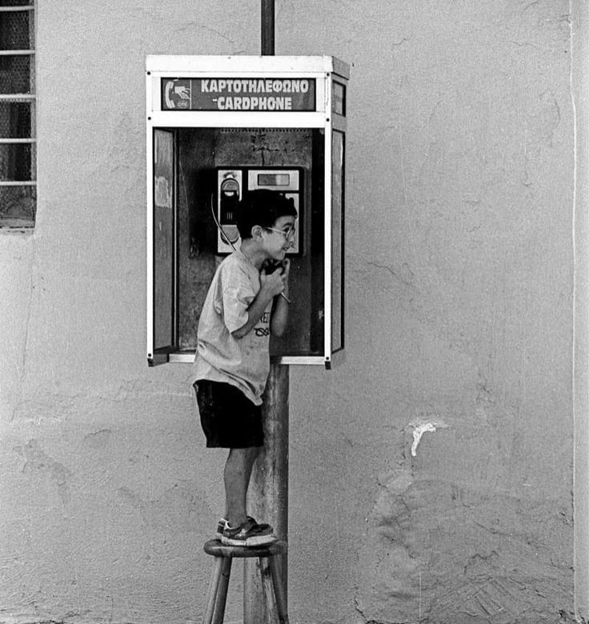

Contact FourSides

We are always open to new collaborations, project inquiries, and conversations about creative work. Whether you are a brand looking for a long-term creative partner, an independent filmmaker seeking production support, or a developer interested in contributing to our open-source tools, we want to hear from you.
FourSides Studio is based in Chicago, Illinois. We work with clients locally and take on select projects nationally. Response times are typically within two business days.
Get In Touch
Email: FourChicago@foursides.com